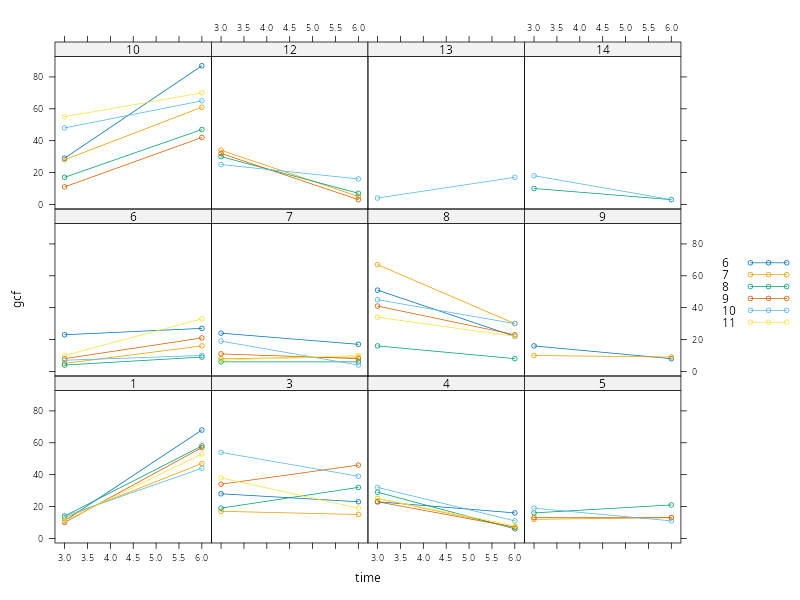
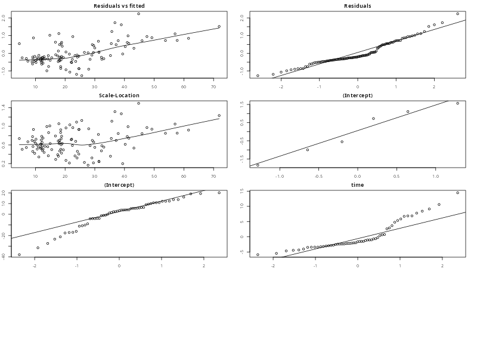
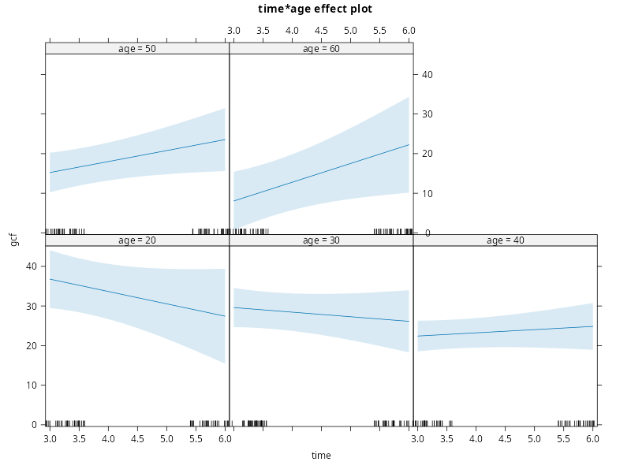

PCHN63… Workshop: Clustered Longitudinal Data Example#
library('lattice') # plotting functions
library('Matrix') # covariance extraction and visualisation
library('nlme') # mixed-effects modelling
library('car') # Asymptotic ANOVA tests
library('emmeans') # Follow-up tests
library('effects') # Effects plots from the model
source('plot-lme.R') # custom plot.lme() function for making assumptions plots
Loading required package: carData
Welcome to emmeans.
Caution: You lose important information if you filter this package's results.
See '? untidy'
Use the command
lattice::trellis.par.set(effectsTheme())
to customize lattice options for effects plots.
See ?effectsTheme for details.
The Dental Veneer Data#
veneer <- read.table('veneer.dat', header=TRUE)
veneer[1:24,]
patient tooth age base_gcf cda time gcf
1 1 6 46 17 4.666667 3 11
2 1 6 46 17 4.666667 6 68
3 1 7 46 22 4.666667 3 13
4 1 7 46 22 4.666667 6 47
5 1 8 46 18 5.000000 3 14
6 1 8 46 18 5.000000 6 58
7 1 9 46 12 3.333333 3 10
8 1 9 46 12 3.333333 6 57
9 1 10 46 10 8.666667 3 14
10 1 10 46 10 8.666667 6 44
11 1 11 46 17 5.666667 3 11
12 1 11 46 17 5.666667 6 53
13 3 6 32 3 7.666667 3 28
14 3 6 32 3 7.666667 6 23
15 3 7 32 4 11.000000 3 17
16 3 7 32 4 11.000000 6 15
17 3 8 32 3 10.666670 3 19
18 3 8 32 3 10.666670 6 32
19 3 9 32 10 10.000000 3 34
20 3 9 32 10 10.000000 6 46
21 3 10 32 11 9.333333 3 54
22 3 10 32 11 9.333333 6 39
23 3 11 32 7 8.000000 3 38
24 3 11 32 7 8.000000 6 19
veneer$patient <- as.factor(veneer$patient)
veneer$tooth <- as.factor(veneer$tooth)
xyplot(
gcf ~ time|patient, # x-axis=age, panel=SICDEG
groups = tooth, # separate lines per-child
data = veneer, # data
type = "b", # lines with points
auto.key = TRUE
)

Patient
patient: the unique identifier of each patientage: the patient’s age
Tooth
tooth: the unique identifier of each toothbased_cdf: the baseline measure of GCF for that toothcda: the … for that tooth
Longitudinal Measurements
time: the time in months after fitting the veneergcf: the measurement of GCF at that time point
Model Building#
To build a model of this dataset, we use the 3-step procedure outlined in the lesson. We assume at this point that the data has been investigated, wrangled, cleaned and ready for modelling.
Step I: A Single Dependency Structure#
We start by isolating a single dependency structure. This needs to be at the lowest level, with no further dependency structures within. In this example, this is a single tooth from a single patient. We choose tooth == '6' within patient == '1' for this purpose.
patient.1 <- subset(veneer, patient == '1')
tooth.6 <- subset(patient.1, tooth == '6')
print(tooth.6)
patient tooth age base_gcf cda time gcf
1 1 6 46 17 4.666667 3 11
2 1 6 46 17 4.666667 6 68
tooth.6 <- subset(patient.1, tooth == '6', select=c(-patient,-age,-base_gcf,-cda))
print(tooth.6)
tooth time gcf
1 6 3 11
2 6 6 68
Based on this, our basic model for a single tooth is
where \(i\) indexes time. Already, a problem should be visible. As we only have two measurements per-tooth, the model fit will be perfect and there will be no residual variance left.
tooth.6.lm <- lm(gcf ~ 1 + time, data=tooth.6)
summary(tooth.6.lm)
Call:
lm(formula = gcf ~ 1 + time, data = tooth.6)
Residuals:
ALL 2 residuals are 0: no residual degrees of freedom!
Coefficients:
Estimate Std. Error t value Pr(>|t|)
(Intercept) -46 NaN NaN NaN
time 19 NaN NaN NaN
Residual standard error: NaN on 0 degrees of freedom
Multiple R-squared: 1, Adjusted R-squared: NaN
F-statistic: NaN on 1 and 0 DF, p-value: NA
This means that we will not be able to estimate a unique effect of time for each tooth from each patient. Instead, we will need to pool information across patients. This is a constraint of the data that we will need to bear in mind.
Step II: Expand to Multiple Structures#
In our second step, we expand the model above to multiple teeth from the same patient. We index these using the notation of \((t)\), to indicate which terms belong to a particular tooth. We start with the most general case of allowing every term to vary by-tooth, giving us
We can now reason more carefully about each of these.
print(patient.1)
patient tooth age base_gcf cda time gcf
1 1 6 46 17 4.666667 3 11
2 1 6 46 17 4.666667 6 68
3 1 7 46 22 4.666667 3 13
4 1 7 46 22 4.666667 6 47
5 1 8 46 18 5.000000 3 14
6 1 8 46 18 5.000000 6 58
7 1 9 46 12 3.333333 3 10
8 1 9 46 12 3.333333 6 57
9 1 10 46 10 8.666667 3 14
10 1 10 46 10 8.666667 6 44
11 1 11 46 17 5.666667 3 11
12 1 11 46 17 5.666667 6 53
Step III: Write the Higher-level Models#
Now that we have made a decision about all the Level 1 terms, we can write the Level 2 models for each term…
… we can add interactions with the effect of time in the model for \(\beta^{(t)}_{1}\) …
Expand to Multiple Patients#
… The full model is
which we can simplify by collapsing the fixed-effects back into the different levels to give
Fitting the Model in R#
implying that we need both 1|tooth and 1 + time|patient in the model.
How do we do this? The way lme() handles this situation is by passing a list to the random= option. Within this list, we label each field using the relevent factor variable and then give the model formula. Due to the labelling, the conditional syntax is implied and does not need to be given explicitly. So, for both 1|tooth and 1 + time|patient we can use list(tooth = ~ 1, patient = ~ 1 + age). This gives us full control of the random-effects specification at each level. Our model can therefore be expressed to lme() uisng the following syntax
veneer.lme <- lme(fixed = gcf ~ 1 + base_gcf + cda + time + age +
time:base_gcf + time:cda + time:age,
random = list(tooth = ~ 1,
patient = ~ 1 + time),
data = veneer,
control = lmeControl(opt='optim')
)
Sigma.1 <- try(getVarCov(veneer.lme))
Error in getVarCov.lme(veneer.lme) :
not implemented for multiple levels of nesting
plot.lme(veneer.lme)

Warning message:
In plot.lme(veneer.lme) :
Marginal covariance structure not available for more than 2 levels
veneer.lme <- lme(fixed = gcf ~ 1 + base_gcf + cda + time + age +
time:base_gcf + time:cda + time:age,
random = list(tooth = ~ 1,
patient = ~ 1 + time),
data = veneer,
control = lmeControl(opt='optim')
)
plot.lme(veneer.lme)
Warning message:
In plot.lme(veneer.lme) :
Marginal covariance structure not available for more than 2 levels
Anova(veneer.lme)
Analysis of Deviance Table (Type II tests)
Response: gcf
Chisq Df Pr(>Chisq)
base_gcf 0.2237 1 0.63622
cda 0.0008 1 0.97751
time 0.6217 1 0.43041
age 16.5425 1 4.757e-05 ***
base_gcf:time 0.2034 1 0.65197
cda:time 2.7075 1 0.09988 .
time:age 4.4098 1 0.03573 *
---
Signif. codes: 0 ‘***’ 0.001 ‘**’ 0.01 ‘*’ 0.05 ‘.’ 0.1 ‘ ’ 1
plot(effect('time:age', veneer.lme))
